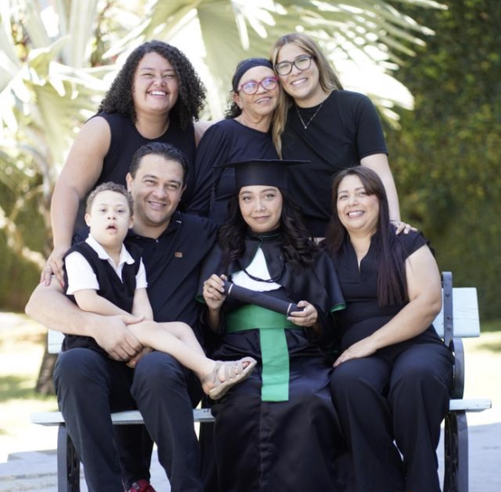
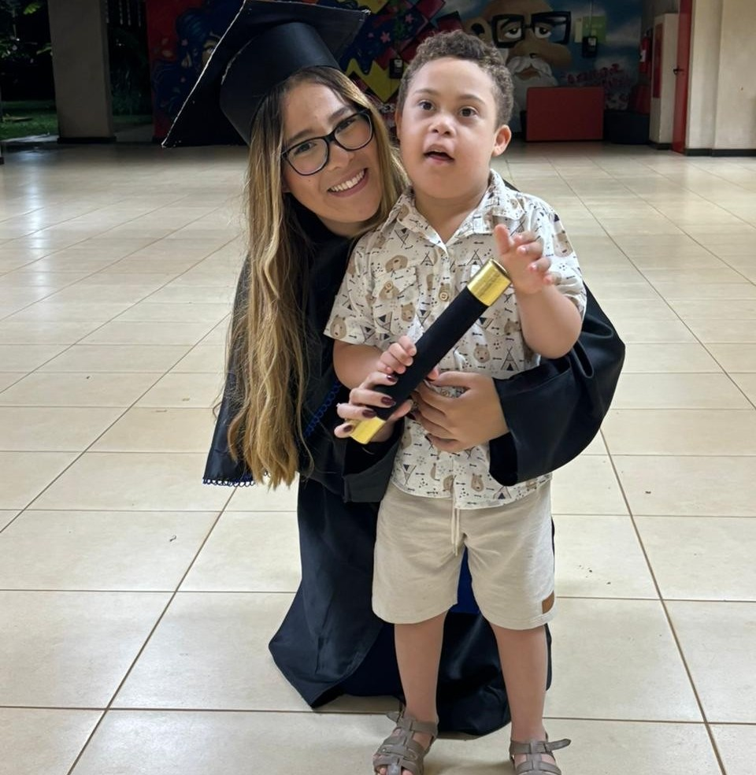
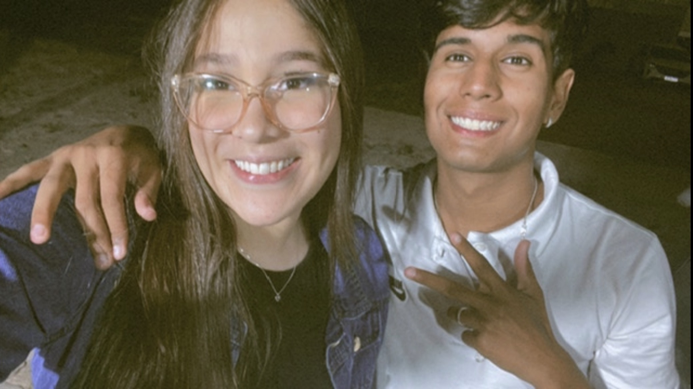
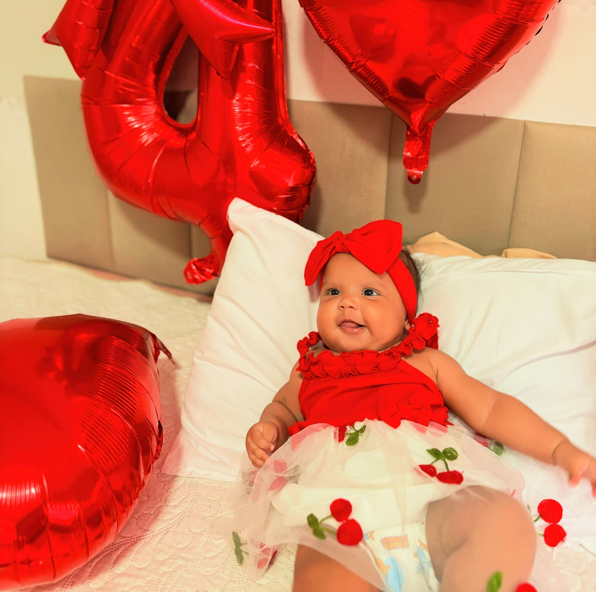
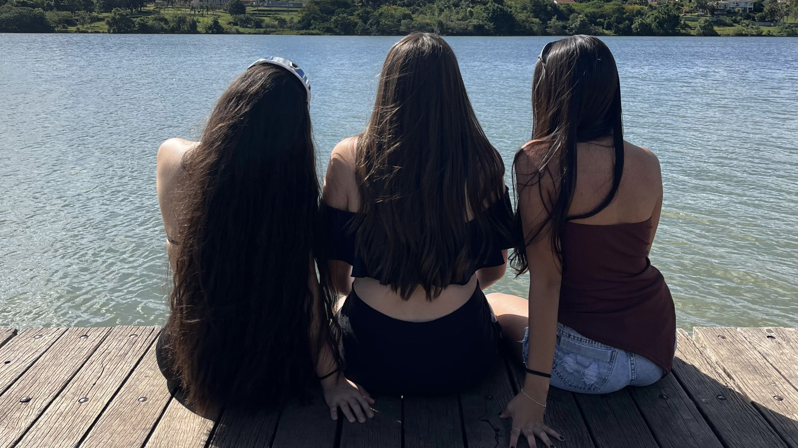
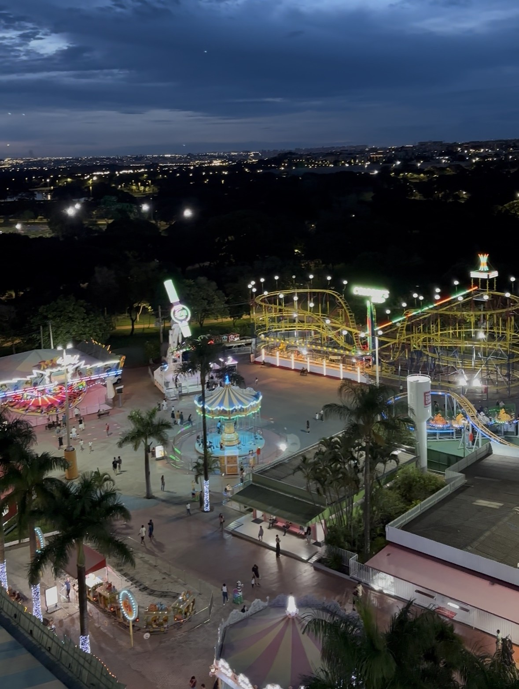
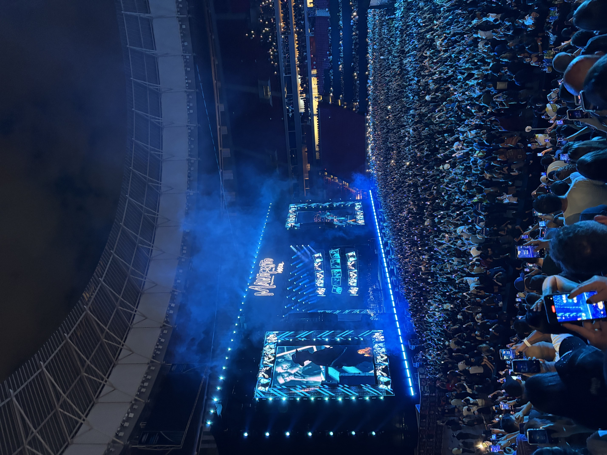
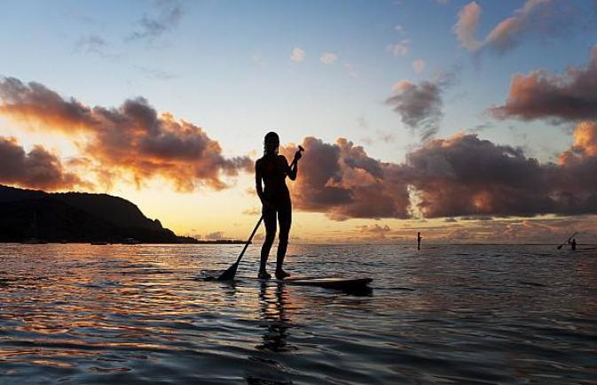
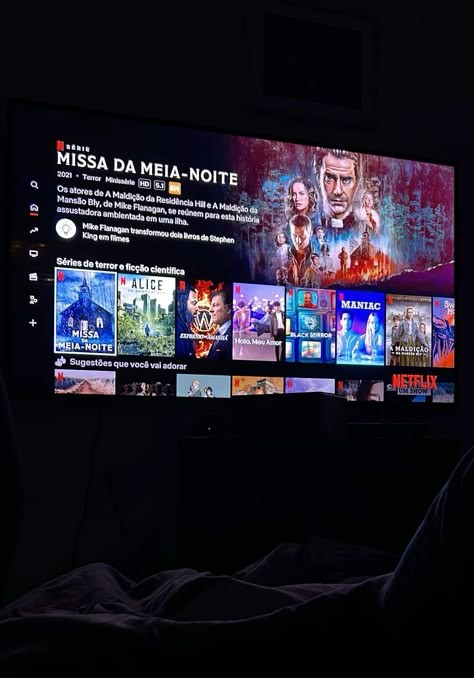
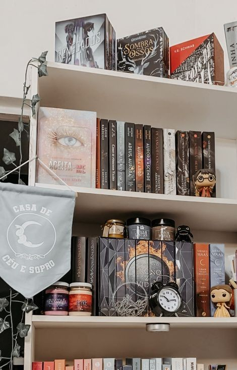

A tecnologia faz parte dos meus estudos e dos meus planos para o
futuro, mas existem muitas outras coisas que também fazem parte de
quem sou. Aqui compartilho um pouco das pessoas, experiências e
atividades que tornam meus dias especiais.
01 / PESSOAS ESPECIAIS
Minha família 💕
Minha família ocupa um lugar muito importante na minha vida. Gosto
de estar presente, compartilhar momentos e construir lembranças com
as pessoas que amo. Meu irmão Jhon é uma das pessoas mais especiais
da minha vida e uma das minhas maiores motivações. Muitos dos meus
sonhos e planos para o futuro também envolvem proporcionar uma vida
boa para ele. Também amo muito minha sobrinha Chloe e meu namorado
Pedro. E tenho muito carinho pelas amigas que fazem parte da minha
caminhada.





02 / PASSEIOS E EXPERIÊNCIAS
Gosto de viver coisas novas.
Adoro sair, conhecer lugares e aproveitar experiências diferentes.
Seja em um parque de diversões, curtindo um show ou me divertindo
andando de stand-up no lago paranoá, gosto de aproveitar esses
momentos e sair um pouco da rotina.




03 / ENTRETENIMENTO
Filmes e séries
Nos momentos de descanso, gosto de assistir a filmes e séries. É
uma das minhas formas favoritas de relaxar, acompanhar histórias
diferentes e aproveitar um tempinho para mim.

04 / LEITURA
Entre livros e histórias
Também gosto do universo da leitura. Os livros são uma
oportunidade de conhecer novas histórias, explorar a imaginação
e descobrir diferentes perspectivas.
MUITO ALÉM DA TECNOLOGIA
Afinal, são essas experiências que também fazem parte de quem sou.
Cada pessoa, lugar e experiência tem um significado especial na
minha história. E ainda existem muitas outras lembranças para
construir!